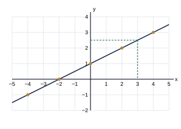

1. Differences: 4, 6, 8, 10, … (constant second difference 2); next differences 12, 14; 30 + 12 = 42; 42 + 14 = 56
Final answer: 42, 56
(2 marks)2. 110012 = 1×16 + 1×8 + 0×4 + 0×2 + 1×1 = 25; 25 < 26
Final answer: 26 is greater (26 > 25)
(2 marks)3. 35 × 52 = 1510
Final answer: 32 = 112
(2 marks)4. Increase = 20100 × 250 = 50; 250 + 50 (or 250 × 120100)
Final answer: Rs 300
(2 marks)5. 6ab − 9ac; common factor 3a
Final answer: 3a(2b − 3c)
(2 marks)6. 50 = 1; 2−1 = 12; 1 + 12
Final answer: 112 (= 32 = 1.5)
(2 marks)7. (2 × 4) × 103+2 = 8 × 105
Final answer: 8 × 105
(2 marks)8. 3x = 9 × 4 = 36; x = 36 ÷ 3 (check: 3×124 = 9)
Final answer: x = 12
(2 marks)9. Vertically opposite angles are equal ⇒ 3x = x + 40 ⇒ 2x = 40 (check: 3×20 = 60 = 20 + 40)
Final answer: x = 20
(2 marks)10. x + (x + 20) + (x + 40) = 180 ⇒ 3x + 60 = 180 ⇒ 3x = 120 (check: 40 + 60 + 80 = 180)
Final answer: x = 40°
(2 marks)11. πd = 88 ⇒ 227 × d = 88 ⇒ d = 88 × 722
Final answer: 28 cm
(2 marks)12. Pythagoras' theorem: d2 = 82 + 62 = 64 + 36 = 100
Final answer: 10 cm
(2 marks)13. A = {2, 4, 6, 8, 10}; A′ = elements of U that are not in A
Final answer: {1, 3, 5, 7, 9}
(2 marks)14. MATHEMATICS has 11 letters; the letter M occurs 2 times
Final answer: 211
(2 marks)15. 750 ml = 0.75 l; 1.5 + 0.75
Final answer: 2.25 litres (2.25 l)
(2 marks)| (i) | |
| Distance for 1 l = 84 ÷ 6 | 1 |
| = 14 km | 1 |
| (ii) | |
| Litres needed = 210 ÷ 14 (or 6 × 210 ÷ 84) | 1 |
| = 15 litres | 1 |
| (iii) | |
| Cost = 15 × 370 | 1 |
| = Rs 5 550 | 1 |
| (iv) | |
| Increase = 10100 × 370 = 37 (or 370 × 110100) | 1 |
| New price = 370 + 37 = Rs 407 | 1 |
| (v) | |
| Cost = 15 × 407 | 1 |
| = Rs 6 105 (check: 5 550 × 1.1 = 6 105) | 1 |
Total marks: 10
| (i) | |
| Outer side = x + 2 + 2 | 1 |
| = (x + 4) m | 1 |
| (ii) | |
| Area = (x + 4)2 | 1 |
| = x2 + 8x + 16 (m2) | 1 |
| (iii) | |
| Area of path = area of outer square − area of lawn = (x2 + 8x + 16) − x2 | 1 |
| = 8x + 16 (m2) (shown) | 1 |
| (iv) | |
| 8x + 16 = 8 × x + 8 × 2 (common factor 8) | 1 |
| = 8(x + 2) | 1 |
| (v) | |
| 8x + 16 = 96 ⇒ 8x = 80 | 1 |
| x = 10 (check: outer side 14 m, 142 − 102 = 196 − 100 = 96) | 1 |
Total marks: 10
| (a) | |
| Loss = 15100 × 40 000 | 1 |
| = Rs 6 000 | 1 |
| Selling price = 40 000 − 6 000 = Rs 34 000 (or 40 000 × 0.85) | 1 |
| (b) | |
| After the first year = 2500 × 108100 | 1 |
| = 2700 | 1 |
| After the second year = 2700 × 95100 | 1 |
| = 2565 | 1 |
| (c) | |
| 45180 × 100% | 2 |
| = 25% | 1 |
Total marks: 10
| (a) | |
| (x + 4)(2x − 3) = x(2x − 3) + 4(2x − 3) = 2x2 − 3x + 8x − 12 | 1 |
| = 2x2 + 5x − 12 | 1 |
| (b) | |
| (i) x2 + x − 20 = (x + 5)(x − 4) | 1 |
| (ii) 2x2 − 18 = 2(x2 − 9) | 1 |
| = 2(x − 3)(x + 3) | 1 |
| (iii) xy − 3x + 2y − 6 = x(y − 3) + 2(y − 3) | 1 |
| = (y − 3)(x + 2) | 1 |
| (c) | |
| LCM 6a; 32a = 96a, 13a = 26a | 2 |
| 96a − 26a = 76a | 1 |
Total marks: 10
| (a) | |
| Son's age x, father's age 3x | 1 |
| After 10 years: 3x + 10 = 2(x + 10) | 1 |
| 3x + 10 = 2x + 20 ⇒ x = 10 | 1 |
| Son 10 years, father 30 years (check: after 10 years 40 = 2 × 20) | 1 |
| (b) | |
| 2x + y = 11 → ①, x − 2y = −2 → ②; ① × 2: 4x + 2y = 22 | 1 |
| Adding ②: 5x = 20 | 1 |
| x = 4 | 1 |
| Substituting: 8 + y = 11 ⇒ y = 3 (check: 4 − 6 = −2) | 1 |
| (c) | |
| 60 = 12 × h × (7 + 5) = 6h | 1 |
| h = 10 | 1 |
Total marks: 10
| (i) | |
| x = −2 ⇒ y = 0; x = 2 ⇒ y = 2 (both blanks correct) | 1 |
| (ii) | |
| Axes with a suitable scale (covering x from −4 to 4 and y from −1 to 3) | 1 |
| Points (−4, −1), (−2, 0), (0, 1), (2, 2), (4, 3) plotted correctly | 1 |
| Points joined by a straight line | 1 |
 Correct graph: solid line y = ½x + 1; dashed lines show the reading for (v) | |
| (iii) | |
| Gradient = 12 (= 0.5) | 1 |
| Intercept = 1 (the line cuts the y-axis at (0, 1)) | 1 |
| (iv) | |
| y = 0 ⇒ ½x + 1 = 0 ⇒ x = −2; coordinates (−2, 0) | 1 |
| (v) | |
| Draw a horizontal line from y = 2.5 to the graph and read x from the x-axis | 1 |
| x = 3 (check: ½ × 3 + 1 = 2.5) (2.9 – 3.1 accepted) | 1 |
| (vi) | |
| When x = 6, y = ½ × 6 + 1 = 4, so (6, 4) lies on the line (yes) — with the reason | 1 |
Total marks: 10
| (a) | |
| Since AB ∥ CD, AP̂Q = PQ̂D (alternate angles) ⇒ 3x + 10 = 5x − 30 (with reason) | 2 |
| 40 = 2x ⇒ x = 20 (PQ̂D = 5×20 − 30 = 70° = AP̂Q = 3×20 + 10) | 1 |
| CQ̂P = 180° − 70° = 110° (adjacent angles on the straight line CD) | 1 |
| (b) | |
| (2n − 4) × 90° = 1080° ⇒ 2n − 4 = 12 | 1 |
| (i) n = 8 sides | 1 |
| (ii) One interior angle = 1080° ÷ 8 = 135° (check: exterior angle 360° ÷ 8 = 45°, 180° − 45° = 135°) | 1 |
| (c) | |
| Exterior angle = sum of the interior opposite angles ⇒ P̂ + Q̂ = 130° | 1 |
| P̂ = 25 × 130° = 52° | 1 |
| Q̂ = 35 × 130° = 78° (check: R̂ = 50°, 52° + 78° + 50° = 180°) | 1 |
Total marks: 10
| (a)(i) | |
| Circumference = length of wire: 2πr = 88 ⇒ 2 × 227 × r = 88 | 1 |
| r = 14 cm | 1 |
| Area = 227 × 14 × 14 = 616 cm2 | 1 |
| (a)(ii) | |
| Side of square = 88 ÷ 4 = 22 cm | 1 |
| Area = 22 × 22 = 484 cm2 | 1 |
| (a)(iii) | |
| The circle encloses the larger area; 616 − 484 = 132 cm2 more | 1 |
| (b) | |
| Diagonal2 = 242 + 72 = 576 + 49 = 625 | 1 |
| Diagonal = 25 m | 1 |
| Distance along the two edges = 24 + 7 = 31 m | 1 |
| Distance saved = 31 − 25 = 6 m | 1 |
Total marks: 10
| (i) | |
| 3 + 7 + f + 4 + 2 = 20 ⇒ 16 + f = 20 | 1 |
| f = 4 | 1 |
| (ii) | |
| Total children = 1×3 + 2×7 + 3×4 + 4×4 + 5×2 = 3 + 14 + 12 + 16 + 10 | 1 |
| = 55 | 1 |
| (iii) | |
| Mean = 55 ÷ 20 | 1 |
| = 2.75 | 1 |
| (iv) | |
| Highest frequency is 7 (families with 2 children) ⇒ mode = 2 | 1 |
| (v) | |
| 20 families ⇒ median is the mean of the 10th and 11th values | 1 |
| Cumulative frequencies: 3, 10, 14, 18, 20 ⇒ 10th value = 2, 11th value = 3 | 1 |
| Median = (2 + 3) ÷ 2 = 2.5 | 1 |
Total marks: 10